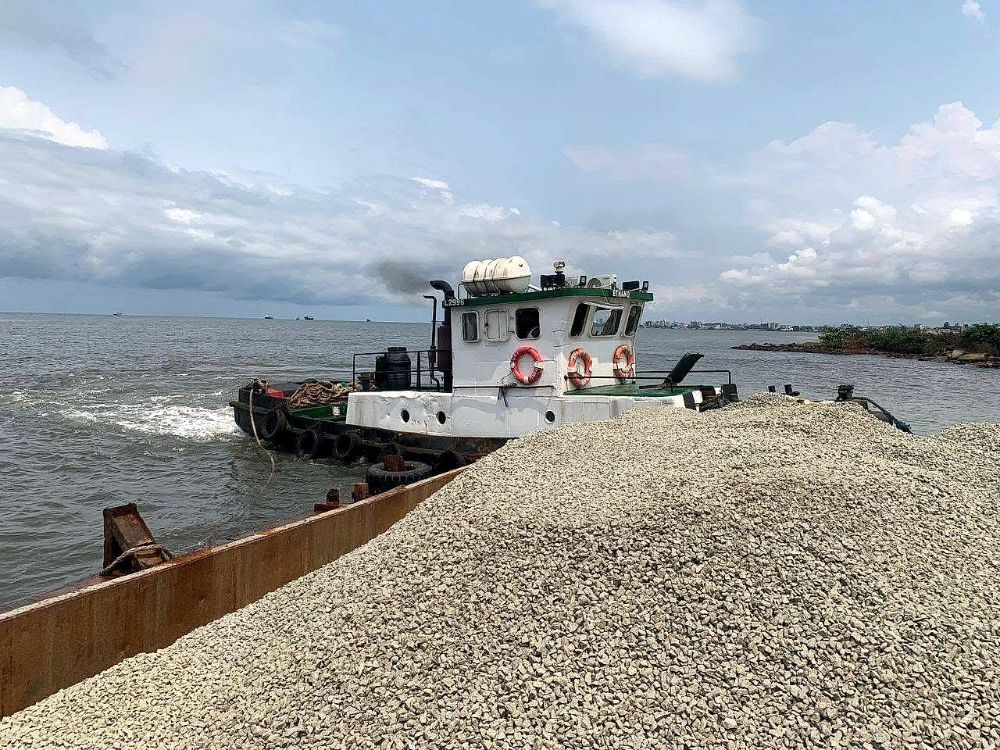
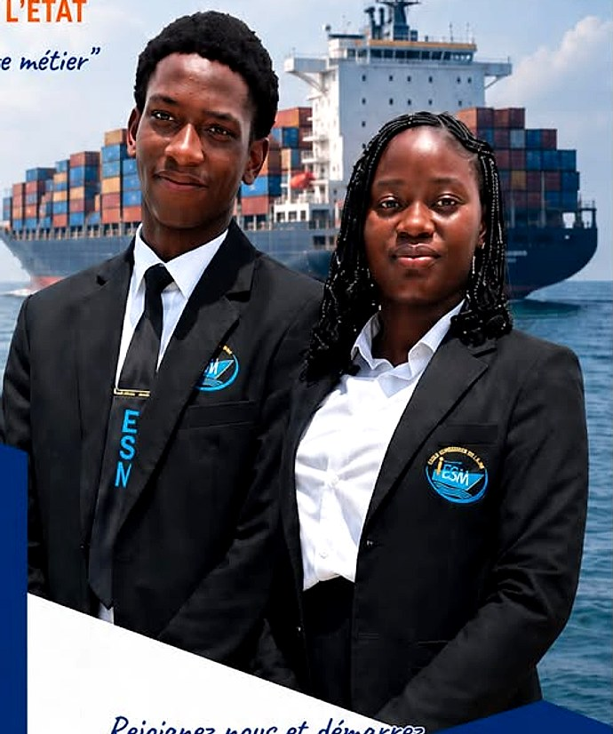
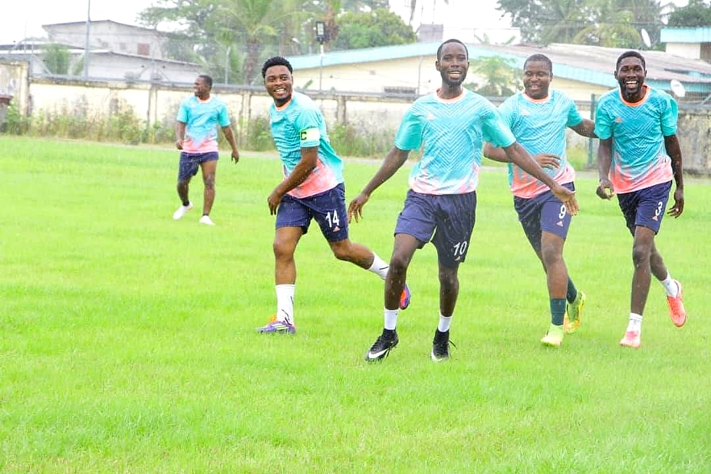

Accueil / L'École
Un établissement d'enseignement supérieur privé, partenaire de l'État gabonais depuis 2013, dédié aux métiers de la mer, des ports, de la logistique et des ressources naturelles.
Installée à Libreville, au carrefour ACAE, l'ESM fait partie du Groupe Intellect Afrique. Elle est liée à l'État par un contrat de partenariat (n° 00399 / MENESTP/CJS, juillet 2013).
Notre ambition : offrir à la jeunesse gabonaise et africaine des formations professionnelles de haut niveau, directement connectées à l'économie maritime, portuaire, logistique, minière et environnementale du pays.


Former des professionnels compétents, immédiatement opérationnels et responsables, capables d'accompagner le développement de l'économie bleue au Gabon.
Devenir une référence en Afrique centrale pour la formation aux métiers maritimes, portuaires et des ressources naturelles.
Rigueur, discipline, esprit d'équipe, respect de l'environnement et engagement citoyen.
Pré-inscription en ligne, étude du dossier et entretien de motivation.
Enseignements fondamentaux, TP, études de cas et sorties de terrain.
Visites d'entreprises, stages chez nos partenaires et rapport de stage.
Soutenance devant jury, cérémonie de remise des toges et insertion professionnelle.
Entreprises portuaires, universités et institutions qui accompagnent nos étudiants.
Découvrez nos 18 formations et déposez votre pré-inscription en ligne.